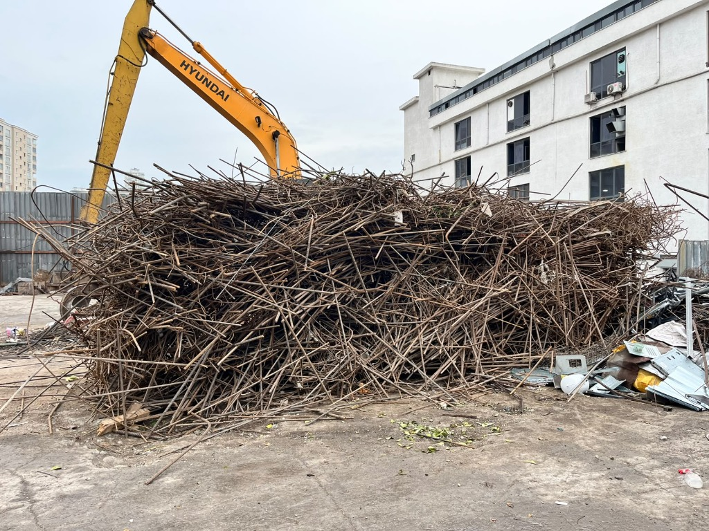

Şantiye & Ekskavatör

Ağır Ekskavatör ile Şantiye Hurda Ayrıştırma ve İstifleme
Kentsel dönüşüm ve büyük inşaat şantiyelerinde ağır tonajlı paletli ekskavatör ve hidrolik kıskaç ataşmanları ile gerçekleştirilen inşaat demiri, donatı çeliği ve kaba hurda toplama operasyonumuz.